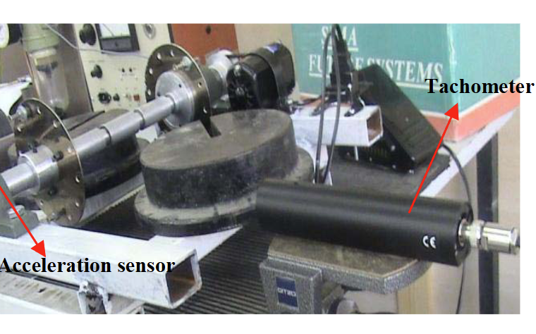

Bearing fault detection using fuzzy C-means and hybrid C-means-subtractive algorithms
2015 IEEE International Conference on Fuzzy Systems (FUZZ-IEEE), Istanbul, Turkey, pp.1-7, 02-05 August 2015. Conference Paper

Abstract
In this research, ball bearing fault diagnosis based on experimental vibration signals is studied. For this purpose, vibration signals are measured by an acceleration sensor from undamaged and damaged ball bearings. By estimating the power spectral density, frequency-domain transform signals are obtained. The locus of the first four extremes of the frequency-domain signals are used as visual patterns for fault detection. The features for detection of bearing faults are extracted from the extremes of the training signals based on proposed clustering algorithms. In line with the conventional fuzzy C-means (FCM) clustering method, we have proposed the improved fuzzy clustering technique based on heuristic subtractive approach. While the FCM suffers from the convergence and efficiency, the hybrid C-means-Subtractive (FCM-S) clustering benefits from the optimal initial point selection that highly improves its performance and convergence. Not only the experimental results for different test signal scenarios show that the proposed FCM-S clustering approach outperforms the conventional FCM method, but also the FCM-S detects the bearing faults better than the previous ones.